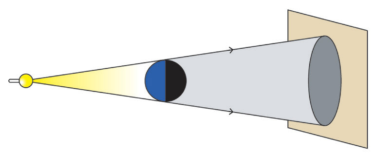
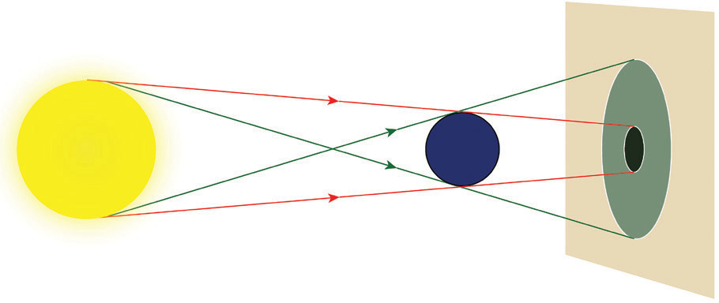
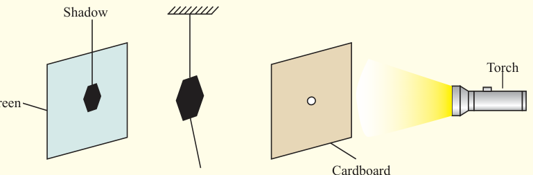

The type of shadow formed varies depending on the size of the source of light. Point sources of light such as the ray box produce a sharp shadow (Figure 4.7 (a)). An extended source of light produces a shadow that is not uniform. A shadow has two main parts. One part is totally dark and is called total shadow or umbra, and the other part is partially dark and is called partial shadow or penumbra (Figure 4.7 (b)). An example of an extended source of light is the Sun. The shadow formed by an extended source of light is blurred at the edges. To explore the concept of light, perform Activity 4.3.

Screen Point source of light Opaque object
Penumbra UmbraFigure 4.7: Shadow formation

Activity 4.3
Aim:
To demonstrate the formation of a shadow from a point source of light
Materials:
piece of cardboard, torch, white screen, and object hanging on a string
Procedure
1.
Make a small hole (2 to 5 mm) in the cardboard (to simulate a point source).
2.
Place the white screen about 30 cm from the cardboard.
3.
Suspend the object between the cardboard and the white screen as in Figure 4.8.

Shadow Screen Hanging object Cardboard Torch
4.
Place a light source close to the hole in the cardboard and observe the shadow of the object that forms on the screen.